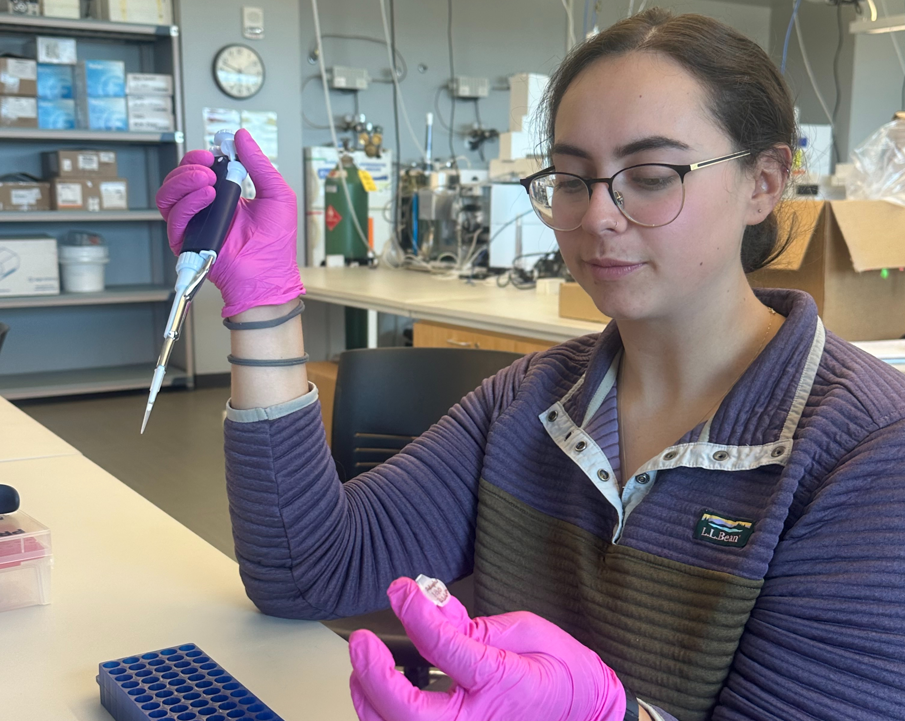

Native Brook Trout Restoration

Chloe Wang (she/her) is a second-year Master of Science student in the Department of Environmental Biology at SUNY ESF. She is a member of the CHAOS Lab at ESF and is collaborating with SOAC on her thesis research. Her study explores the restoration potential of native Brook Trout (Salvelinus fontinalis) in the upper Onondaga Creek watershed, on land recently repossessed by the Onondaga Nation. This project is part of an ongoing, shared research agenda between the Onondaga Nation and the Center for Native Peoples and the Environment at ESF.
Muskellunge and Walleye Population Surveillance
Aquatic and Fisheries Science Master's student at SUNY ESF, co-advised by Dr. John Farrell and Dr. Nick Sard. Examining muskellunge and walleye population structure in the St. Lawrence River and Eastern Lake Ontario. In these pictures, we were working on a RADseq library prep to sequence DNA from our study organisms. This will give us a foundation for population analyses down the line.